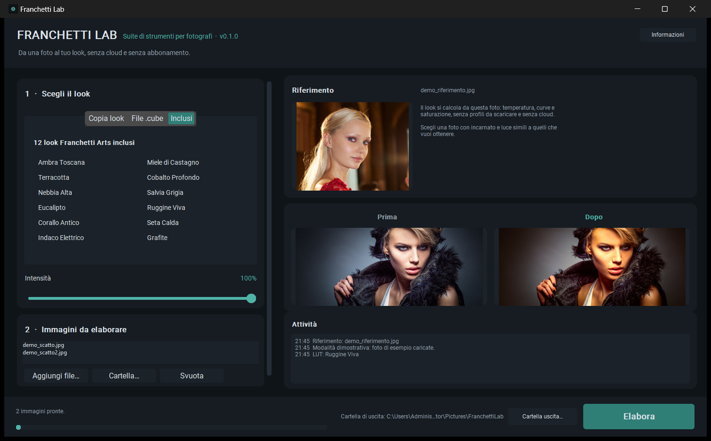
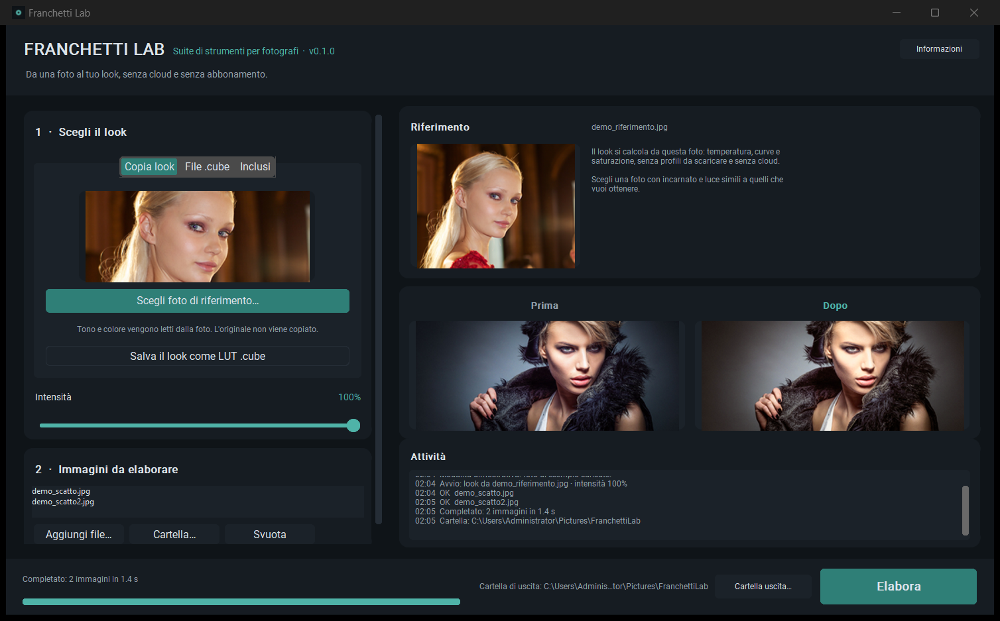
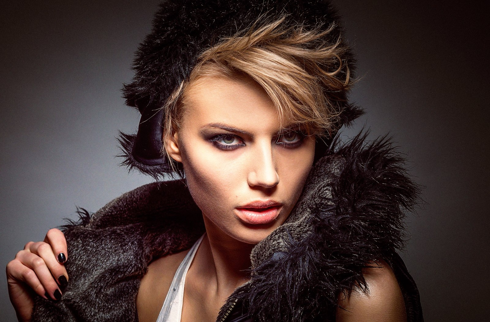
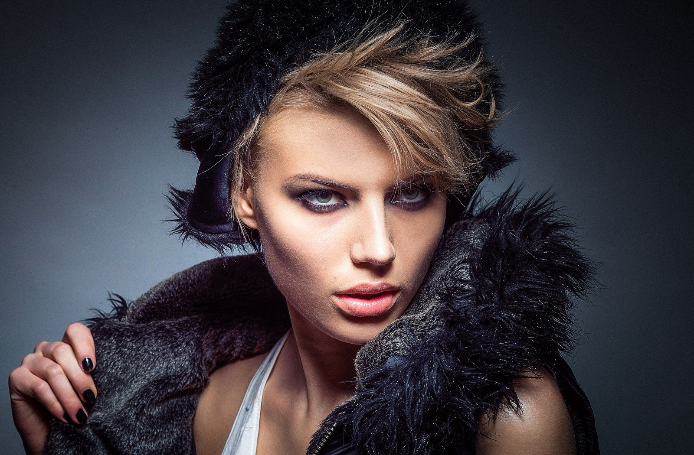

Franchetti Lab è un programma per Windows che lavora sui look.
Non è un editor completo e non prova a esserlo: prende una fotografia
di riferimento, ne ricava una LUT 3D, e applica quella LUT a una o a
molte immagini. In alternativa applica un file .cube che
hai già, oppure uno dei dodici look inclusi.
Questa guida è scritta per essere usata davvero: prima si installa, poi si prova, poi si capisce perché. I passaggi tecnici sono separati dai consigli di metodo, così puoi tornare a cercare solo quello che ti serve.
In breve
- Scarica il programma e, se vuoi, il pacchetto dei 24 look.
- Rendi attendibile il certificato di sviluppo, una volta sola.
- Apri il file MSIX e installa.
- Scegli un riferimento o una LUT, regola l'intensità, elabora.
01 Prima di scaricare
Cosa serve
- Windows 10 (versione 1809 o successiva) oppure Windows 11, a 64 bit.
- Circa 100 MB liberi dopo l'installazione, più lo spazio per le fotografie elaborate.
- Nessuna connessione dopo il download: il programma non chiama casa.
- Nessun account, nessuna chiave, nessuna attivazione.
I due download
Nella sezione Download ci sono due file. Sono gli unici necessari:
- Franchetti Lab 0.1.0 (MSIX, 45 MB) — il programma. Contiene Copia look, Applica LUT e i dodici look inclusi.
-
Franchetti Arts · Serie Lab (ZIP, 975 KB) — tutte e
ventiquattro le LUT in formato
.cube, utilizzabili anche in altri programmi.
Per l'installazione serve anche il certificato pubblico del pacchetto: è un file di 780 byte, non un programma. Il link è nel capitolo successivo. Non va installato come applicazione: va reso attendibile una volta sola.
Verificare i file
Se vuoi controllare che il download sia integro, confronta l'impronta SHA-256. In PowerShell:
Get-FileHash .\FranchettiLab_0.1.0.0_x64.msix -Algorithm SHA256
| File | Dimensione | SHA-256 |
|---|---|---|
| MSIX | 46.743.176 byte | 0DF279A06E3DB4A8BC1457E447A319511751E245FE133525A0D801FB1C17FB8F |
| ZIP look | 998.576 byte | E35F7CDC34662E02F835E713D516C09B0BEE1836592BE9CD069EFF6395E59406 |
La versione 0.1.0 è distribuita come pacchetto MSIX firmato con un certificato di sviluppo. La pubblicazione sul Microsoft Store è in programma, non ancora attiva. Quando sarà disponibile, l'installazione non richiederà il passaggio sul certificato.
02 Installazione
Windows accetta solo pacchetti firmati da un certificato di cui si fida. Il nostro è un certificato di sviluppo, emesso a nome FranchettiAcademy: non è un'autorità pubblica, quindi va reso attendibile sul tuo computer. È un passaggio una volta sola.
Passo 1 — Scarica il certificato
Scarica FranchettiLab_certificato.cer (780 byte). Non aprirlo con l'editor: usalo con un doppio clic.
Passo 2 — Installalo in “Persone attendibili”
- Apri il file. Compare la finestra Certificato. Scegli Installa certificato.
- Computer locale. Seleziona Computer locale e premi Avanti. Se Windows chiede il consenso, conferma.
- Collocazione manuale. Scegli Colloca tutti i certificati nel seguente archivio, premi Sfoglia e seleziona Persone attendibili.
- Fine. Conferma con Avanti, poi Fine. Windows risponde che l'importazione è riuscita.
Se scegli un archivio diverso da Persone attendibili,
l'installazione può fallire con l'errore 0x800B0109.
In quel caso ripeti il passaggio e controlla l'archivio.
Passo 3 — Installa il programma
Fai doppio clic su FranchettiLab_0.1.0.0_x64.msix e premi
Installa. Al termine, Franchetti Lab compare nel menu Start
con il suo nome. Non serve altro: nessun runtime da scaricare, nessun
account da creare.
In alternativa: PowerShell
Se preferisci la riga di comando, dopo aver importato il certificato:
Add-AppxPackage -Path .\FranchettiLab_0.1.0.0_x64.msix
Il comando va eseguito nella cartella del file. Non serve eseguirlo come amministratore: l'installazione è per l'utente corrente.
Se compare un avviso di Windows
SmartScreen può segnalare il file perché il certificato non è emesso da un'autorità pubblica. È il comportamento atteso per una build di sviluppo. Prima di procedere, controlla che il certificato riporti FranchettiAcademy e che l'impronta del file corrisponda a quella pubblicata qui sopra.
Aggiornare o disinstallare
Per aggiornare, installa il pacchetto più recente sopra quello esistente: l'identità dell'app resta la stessa e le preferenze vengono conservate. Per rimuoverla, usa Impostazioni → App → App installate e scegli Disinstalla.
03 L'interfaccia
La finestra è divisa in due colonne. A sinistra scegli il look e le immagini; a destra vedi il riferimento, il confronto e il registro. In basso ci sono la cartella di uscita e il pulsante Elabora.
 1
2
3
4
5
6
1
2
3
4
5
6
- Schede del look. Copia look per partire da una fotografia, File .cube per aprire una LUT, Inclusi per i dodici look dell'app.
- Riferimento. L'immagine da cui viene ricavato il look. Resta visibile anche dopo aver scelto le foto da elaborare.
- Intensità. Da 0 a 100%. A 0 non cambia nulla; a 100 si applica tutta la LUT.
- Immagini da elaborare. Aggiungi file singoli o un'intera cartella. Svuota azzera l'elenco, non i file.
- Prima / Dopo. L'anteprima dell'immagine selezionata nell'elenco, con il look corrente.
- Cartella di uscita ed Elabora. Destinazione dei JPEG e avvio del lavoro. Il percorso viene ricordato alla riapertura.
La cartella predefinita è Immagini\FranchettiLab. Puoi
cambiarla con Cartella uscita. Le impostazioni minime
(cartella di uscita) vengono salvate nella cartella di configurazione
dell'utente, non nel sito e non su un server.
Lavora sempre su una copia o su una cartella di uscita separata. Franchetti Lab non modifica gli originali, ma tenere i file di partenza distinti rende più semplice confrontare e tornare indietro.
04 Copia look
Copia look non copia i pixel della fotografia di riferimento. Ne analizza tono, bilanciamento, saturazione e contrasto, costruisce un modello in spazio Oklab, lo converte in una LUT 3D da 17³ punti e applica quella LUT alle immagini scelte. È per questo che il risultato funziona anche su soggetti e inquadrature diverse.
Scegliere un buon riferimento
- Scegli una fotografia con un'esposizione corretta: né bruciata né troppo scura.
- Preferisci una luce simile a quella della serie da elaborare. Un ritratto in studio non è un buon riferimento per un esterno in controluce.
- Evita immagini con filtri già molto forti o con una dominante netta: la dominante verrebbe trasferita.
- Per la moda, controlla la pelle: è la prima cosa che tradisce un look troppo aggressivo.
Procedura
- Apri la scheda Copia look. Premi Scegli foto di riferimento… e seleziona il file. Sono accettati JPEG, PNG, TIFF, WEBP, BMP e i 16 formati RAW supportati.
- Guarda il riferimento. Compare in alto a destra con il nome del file. Il look viene costruito subito.
- Regola l'intensità. Parti da 100% per vedere l'effetto pieno, poi scendi fino al punto in cui la pelle e le luci restano credibili. Sui look caldi, 60–80% è spesso il punto giusto.
- Aggiungi le immagini. Con Aggiungi file… o Cartella…. L'anteprima mostra la prima immagine selezionata.
- Controlla il confronto. Seleziona le voci dell'elenco per vedere Prima e Dopo. Il registro in basso riporta ciò che sta accadendo.
- Elabora. Scegli la cartella di uscita e premi Elabora. Il programma scrive un JPEG per ogni immagine, con lo stesso nome del file di partenza.
Salvare il look
Con Salva il look come LUT .cube esporti il look appena costruito. Il file è una LUT 3D 17³, con dominio 0–1 e valori sRGB: puoi riaprirlo in Franchetti Lab, nel tuo programma di fotoritocco o in una pipeline video. È il modo più semplice per portare un look da un computer all'altro senza dipendere dall'app.
Non corregge l'esposizione, non rimuove oggetti, non ricostruisce dettagli. È uno strumento di colore: se la fotografia di partenza è sottoesposta o fuori fuoco, la LUT non la salva. Conviene sistemare prima esposizione e bilanciamento del bianco, poi applicare il look.
05 Applica LUT
La scheda File .cube applica una LUT 3D che hai già. La scheda Inclusi mostra i dodici look della Serie Lab già dentro l'app. In entrambi i casi il flusso è lo stesso: scegli il look, regola l'intensità, aggiungi le immagini, elabora.

Formato accettato
- LUT 3D in formato Adobe Cube (
.cube). - Dominio 0–1 e valori pensati per sRGB.
- Qualsiasi dimensione dichiarata da
LUT_3D_SIZE: 17³, 33³ o altra.
Le LUT scritte per spazi logaritmici (per esempio LogC o S-Log) non
vanno applicate direttamente: vanno convertite nello spazio giusto
dal programma che le usa. Franchetti Lab non interpreta
DOMAIN_MIN e DOMAIN_MAX diversi da 0–1.
L'intensità
L'intensità è un'interpolazione lineare tra l'immagine originale e il risultato della LUT. A 50% il risultato è a metà strada, non “metà effetto” in senso percettivo. Per questo due look diversi possono richiedere percentuali diverse per sembrare ugualmente presenti.
Regola pratica: guarda prima la pelle, poi le luci, poi il colore dominante. Se la pelle diventa arancione o grigia, scendi. Se le luci si chiudono, scendi. Se il look scompare, sali.
Elaborazione in serie
Puoi aggiungere singoli file o un'intera cartella. Il programma elabora in sequenza, mostra l'avanzamento e scrive nel registro l'esito di ogni immagine. Se un file non è leggibile, l'errore viene segnalato senza interrompere il resto della coda.

Cosa viene scritto
- Un file JPEG per ogni immagine, qualità 92, progressivo.
- Profilo colore sRGB incorporato.
- Orientamento corretto e EXIF conservati quando il file di partenza li contiene.
- Se il nome di uscita coinciderebbe con quello di partenza, viene aggiunto il suffisso
_lab.
I RAW vengono letti con il bilanciamento del bianco della fotocamera e senza aumentare la luminosità automaticamente: è normale che l'anteprima di un RAW appaia più scura o più piatta del JPEG della fotocamera. Il file finale è comunque un JPEG, non un RAW sviluppato.
06 I 24 look
La serie Franchetti Arts · Serie Lab è composta da ventiquattro LUT nuove, divise in cinque famiglie. Dodici sono incluse nell'app; tutte e ventiquattro sono nel pacchetto ZIP.
| Famiglia | Look | Nell'app |
|---|---|---|
| Caldi | Ambra Toscana, Miele di Castagno, Terracotta, Ocra, Arancio Bruciato, Sabbia Chiara | 01, 02, 03 |
| Freddi | Cobalto Profondo, Blu Ghiaccio, Lavanda, Petrolio, Nebbia Alta, Notte Blu | 07, 11 |
| Verdi | Salvia Grigia, Eucalipto, Verde Muschio, Cedro | 13, 14 |
| Materici | Ruggine Viva, Corallo Antico, Bordeaux, Seta Calda, Cipria | 17, 18, 20 |
| Elettrici | Indaco Elettrico, Magenta Laser, Grafite | 22, 24 |
Come sceglierli
- Caldi per pelle, set caldi, backstage, luce di tungsteno. Tienili sotto l'80% sui primi piani.
- Freddi per notte, pioggia, interni con finestre, scena cinematografica. Notte Blu è volutamente sottile.
- Verdi per esterni, vegetazione, uniformi, scene militari o distopiche.
- Materici per un look da stampa: ruggine, corallo, bordeaux, pelle.
- Elettrici per fashion, musica, ritratti grafici. Grafite è il bianco e nero della serie.
Licenza
Puoi usare i look liberamente, anche in lavori commerciali, modificarli
per i tuoi lavori e condividerli insieme a un tuo lavoro lasciando il
pacchetto integro. Non puoi venderli come prodotto a sé, redistribuirli
come se fossero tuoi o includerli in una raccolta a pagamento. Il testo
completo è nel file LICENZA.txt dentro lo ZIP.
07 Fuori dall'app
Una LUT .cube è un file di testo: può essere letto da
qualsiasi programma che supporti le LUT 3D. Quella che segue è la
posizione tipica nei programmi più diffusi. I menu possono cambiare
nome con le versioni: cerca la voce “LUT” o “Look”.
| Programma | Dove si carica | Note |
|---|---|---|
| Photoshop | Livello → Nuovo livello di regolazione → Color Lookup → Carica LUT 3D | Funziona su livelli 8 e 16 bit. Applica la LUT a un gruppo se vuoi limitarla. |
| Premiere Pro | Lumetri Color → Creative → Look → Sfoglia | L'intensità si regola con lo slider Intensity di Lumetri. |
| DaVinci Resolve | Color → LUT → apri la cartella LUT e copia il file, poi selezionalo | Verifica che il progetto lavori in sRGB o converti il segnale di conseguenza. |
| Affinity Photo | Livello → Nuovo livello di regolazione → LUT → Carica | Buona compatibilità con i file 17³. |
| Final Cut Pro | Effects → Custom LUT → Load | Controlla lo spazio colore della timeline: la LUT è pensata per sRGB. |
| Lightroom Classic | Non importa .cube direttamente |
Lightroom usa profili .xmp. Apri la foto in Photoshop, applica la LUT e torna in Lightroom come TIFF/PSD. |
Quasi sempre dipende dallo spazio colore. Una LUT costruita per sRGB, applicata a materiale Log o a un profilo camera diverso, produce un risultato sbagliato. Converti prima, applica dopo; e confronta sempre un fotogramma di prova.
08 Moda e cinema
Moda e cinema hanno lo stesso problema: la coerenza. Un look può essere bellissimo su un fotogramma e sbagliato sul successivo. Il metodo conta più della LUT.
Moda: la pelle prima di tutto
- Parti da un riferimento con una luce simile e una pelle simile.
- Applica il look, poi guarda il viso al 100%: se il colore della pelle non regge, scendi di intensità.
- Con i look caldi resta tra 60% e 80%; con Grafite puoi arrivare al 100%.
- Non sommare due LUT. Se serve più carattere, torna al riferimento e ricostruisci il look.
- Elabora la serie con la stessa intensità: è questo che rende riconoscibile un servizio.


Prima DopoCinema: la continuità tra i fotogrammi
- Usa lo stesso look e la stessa intensità su tutta la scena, non fotogramma per fotogramma.
- Controlla le alte luci: una LUT può chiudere il cielo o la finestra più di quanto sembri nell'anteprima piccola.
- Per gli interni notturni, Notte Blu o Cobalto Profondo al 100% danno un'ombra fredda senza stravolgere la pelle.
- Se il materiale è Log, non applicare la LUT direttamente: converti prima in sRGB o usa la LUT nel programma che gestisce la trasformazione.
- Per il backstage e le foto di scena, l'elaborazione in cartella mantiene coerente l'intero reportage.

Una checklist prima di consegnare
- Pelle. Guardo i visi al 100%: nessuna dominante strana, nessuna chiazza.
- Luci. Il bianco non è bruciato e il nero non è tappato.
- Serie. Le immagini hanno la stessa temperatura e la stessa intensità.
- File. I JPEG sono nella cartella giusta, con i nomi corretti e i metadati attesi.
- Originali. Non ho sovrascritto nulla e posso tornare indietro.
09 Problemi e soluzioni
| Sintomo | Causa probabile | Soluzione |
|---|---|---|
| Errore 0x800B0109 | Il certificato non è attendibile | Reimporta il .cer in Persone attendibili del computer locale, poi riprova. |
| Il pacchetto non si apre | Download incompleto o certificato non importato | Confronta la dimensione e l'hash; reinstalla il certificato. |
| L'app non compare nel menu Start | Installazione per un altro utente o non completata | Cerca “Franchetti Lab” in Start; se manca, reinstalla con Add-AppxPackage. |
| Il look è troppo forte | Intensità alta o riferimento troppo contrastato | Scendi tra 60% e 80%; scegli un riferimento con luce più simile. |
| La pelle diventa arancione | Look caldo applicato al 100% | Riduci l'intensità e controlla il bilanciamento del bianco prima della LUT. |
| I colori non corrispondono in Photoshop | Spazio colore o profilo diverso | Lavora in sRGB, applica la LUT a un livello e confronta con l'anteprima dell'app. |
| Il RAW è più scuro del previsto | Lettura senza aumento automatico della luminosità | È il comportamento voluto: regola l'esposizione prima di applicare il look. |
| Mancano i dati EXIF | Il file di partenza non li conteneva | Il programma conserva ciò che trova; PNG e screenshot spesso non hanno EXIF. |
| L'elaborazione è lenta | File RAW di grandi dimensioni | L'anteprima usa una versione ridotta; l'elaborazione finale lavora a piena risoluzione. |
| Windows mostra un avviso | Certificato di sviluppo, non pubblico | È atteso. Verifica il nome FranchettiAcademy e l'hash del file. |
10 Glossario
- LUT
- Look-Up Table: una tabella che trasforma un colore in un altro. Una LUT 3D lavora su triple di valori (rosso, verde, blu).
- LUT 3D
- Una mappa tridimensionale del colore. La dimensione 17³ significa 17 valori per ciascun canale, cioè 4.913 punti.
.cube- Formato testuale Adobe per le LUT 3D. Contiene la dimensione, il dominio e i valori di uscita.
- Oklab
- Spazio colore percettivo usato per costruire il look: separa luminosità e cromia in modo più prevedibile del semplice RGB.
- sRGB
- Spazio colore standard del web e della maggior parte dei monitor. Le LUT della Serie Lab sono pensate per sRGB.
- Intensità
- Percentuale di miscelazione tra immagine originale e risultato della LUT.
- Riferimento
- La fotografia da cui viene ricavato il look in Copia look.
- EXIF
- Dati incorporati nella fotografia: fotocamera, obiettivo, tempi, ISO, orientamento.
- ICC
- Profilo che descrive come interpretare i colori di un file. L'app incorpora il profilo sRGB nei JPEG.
- MSIX
- Formato di installazione delle app Windows. Include l'applicazione, il manifest e la firma digitale.
- Certificato
- File che identifica chi ha firmato il pacchetto. Un certificato di sviluppo non è emesso da un'autorità pubblica e va reso attendibile manualmente.
11 Privacy, licenza, aggiornamenti
Privacy
Il programma non ha server, non richiede account e non invia statistiche. Le immagini vengono lette e scritte solo nelle cartelle che scegli. Il sito non usa cookie, non profila e non include strumenti di terze parti; l'hosting può registrare i log tecnici come qualsiasi server web. Dettagli nell'informativa privacy.
Licenza
Franchetti Lab è gratuito per uso personale e commerciale. Non puoi
venderlo, ridistribuirlo come prodotto tuo o rimuovere gli avvisi di
copyright. I 24 look possono essere usati e modificati liberamente,
anche in lavori commerciali, ma non rivenduti come raccolta a sé. Il
testo completo è in LICENZA.txt.
Aggiornamenti
La versione si aggiorna installando il nuovo pacchetto MSIX sopra il
precedente. I look salvati come .cube restano file
normali e continuano a funzionare. La pubblicazione sul Microsoft
Store è in programma; fino ad allora l'installazione richiede il
passaggio sul certificato descritto al capitolo 02.
→ Da qui
Torna al download, guarda i confronti o apri la galleria dei 24 look.
Per problemi non elencati: reportage@libero.it. Se scrivi, indica la versione di Windows, il passaggio in cui si blocca e il messaggio esatto: aiuta a rispondere meglio.